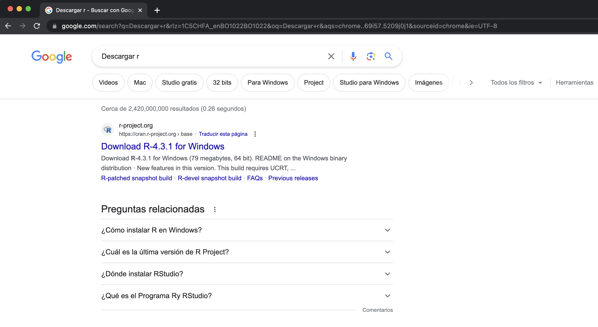
R y RStudioEn esta primera clase, vamos a introducirnos en el lenguaje de programación R, su instalación, el uso del entorno RStudio, y los primeros conceptos de objetos y operaciones.
R es un lenguaje de programación utilizado principalmente para análisis de datos y estadísticas. Es de código abierto y cuenta con una comunidad muy activa.
“R nació como una reimplementación de software libre del lenguaje S, adicionado con soporte para ámbito estático. Se trata de uno de los lenguajes de programación más utilizados en investigación científica, siendo además muy popular en los campos de aprendizaje automático (machine learning), minería de datos, econometría, investigación biomédica, bioinformática y en el campo económico-financiero. A esto contribuye la posibilidad de cargar diferentes bibliotecas o paquetes con funcionalidades de cálculo y graficación. […] Fue desarrollado inicialmente por Robert Gentleman y Ross Ihaka del Departamento de Estadística de la Universidad de Auckland en 1993.”
Aún cuando existen alternativas quizás más sencillas de aprender para realizar análisis de datos como pueden ser Stata, SPSS, EViews o incluso MS Excel, R permite la automatización y reproducción de las rutinas más comunes, además de que provee un ecosistema completo para la publicación de los resultados en función a las distintas audiencias que uno pueda tener: otros analistas, presentaciones ejecutivas, conferencias…
Aunque R no es uno de los lenguajes de programación más utilizados, sí es uno de los lenguajes más populares, ampliamente utilizado en el ámbito académico y profesional para análisis estadístico y visualización de datos.
Para el análisis de datos, sin embargo, los tres lenguajes más comunes son R, Python y Julia. Cada uno tiene sus ventajas y desventajas, dependiendo del contexto y las necesidades del usuario.
| Lenguaje | Pros | Contras |
|---|---|---|
R |
Paquetes estadísticos, comunidad | Menor rendimiento en grandes datos |
Python |
Versatilidad, bibliotecas robustas | Menos enfoque estadístico |
Julia |
Alto rendimiento, sintaxis clara | Comunidad pequeña |
En esta sección, vamos a ver cómo instalar, primero, R y, en segundo lugar, RStudio, dos herramientas esenciales para trabajar con el lenguaje de programación R. Como recordatorio, R es el lenguaje de programación en sí, mientras que RStudio es un entorno de desarrollo integrado (IDE) que facilita el trabajo con R.
En primer lugar, se debe descargar R. Para esto ingresamos a la página oficial, ya sea buscando en google o directamente en r-project.org
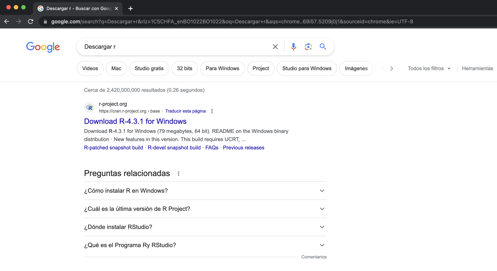
Aunque automáticamente suele detectar el sistema operativo, es recomendable verificar que se descargue la versión correcta.
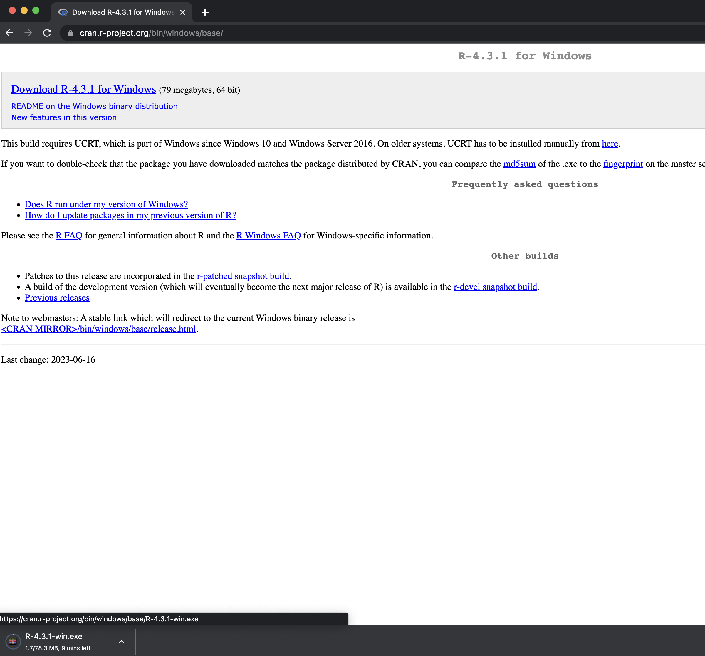
Una vez instalado, se puede abrir R desde el menú de aplicaciones. Al abrirlo, se mostrará una consola donde se pueden escribir comandos directamente.
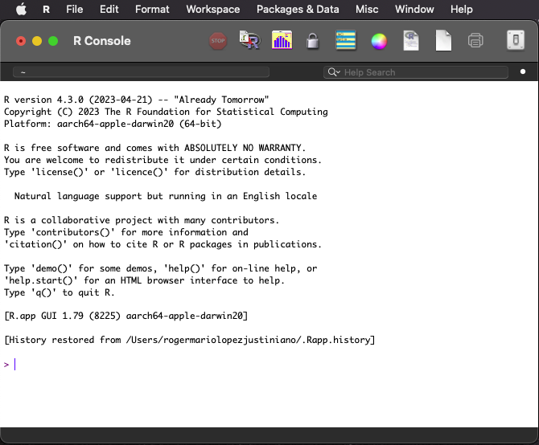
Para facilitar el uso de R, se recomienda instalar RStudio, un entorno de desarrollo integrado (IDE) que proporciona una interfaz más amigable y herramientas útiles para trabajar con R.
Una vez instalado R, vamos a proceder a instalar rstudio.com.
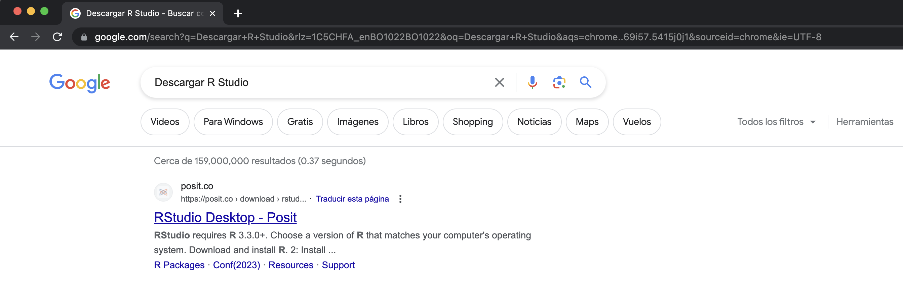
Existen diferentes versiones de RStudio, pero para este curso vamos a utilizar la versión gratuita, que se puede descargar desde la página oficial.
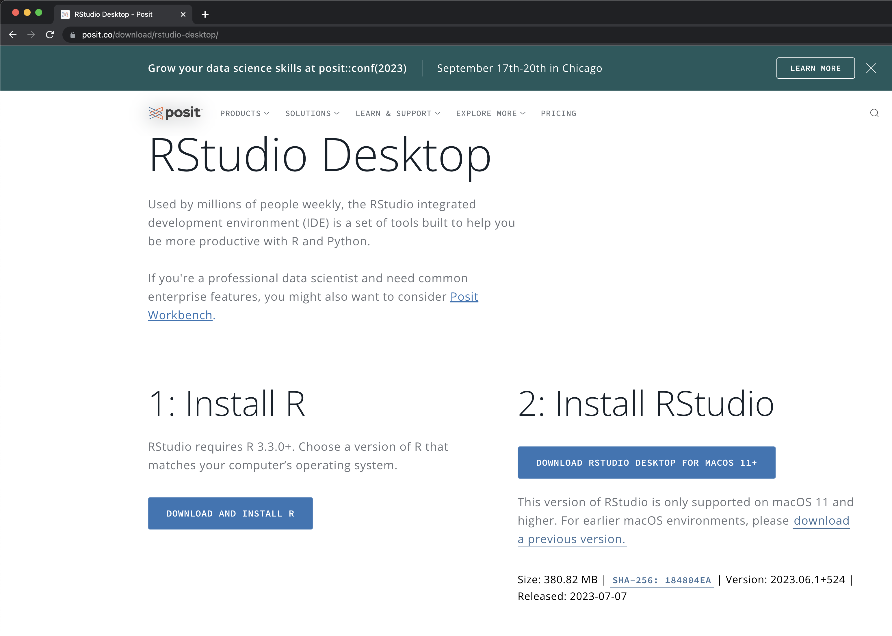
RStudioEs importante familiarizarse con el entorno de trabajo de RStudio y explorar sus diferentes paneles y funcionalidades.
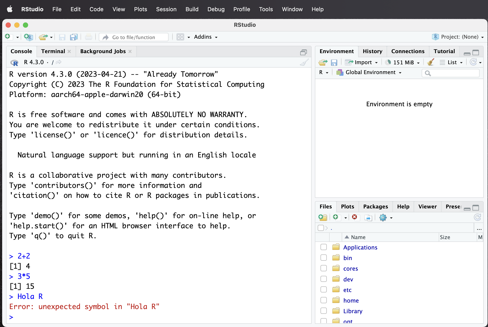
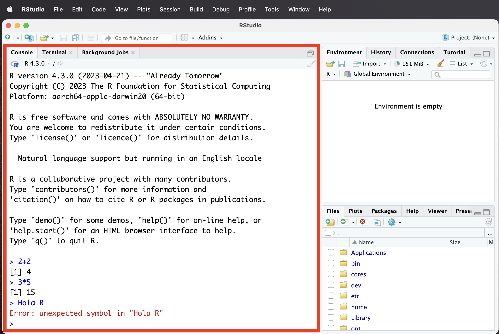
R.R.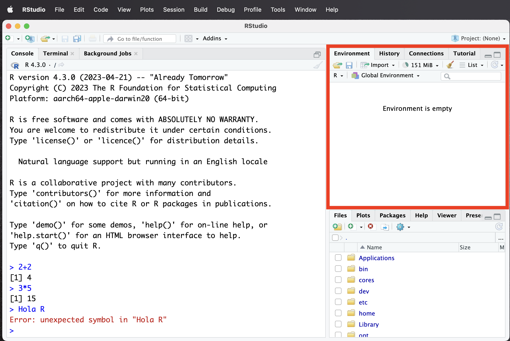
R.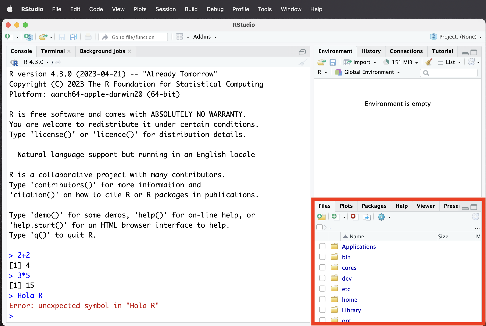
REn R, los datos se almacenan en objetos. Estos objetos pueden ser de diferentes tipos, como vectores, matrices, listas, data frames, entre otros. En este caso definimos x como nuestro primer objeto.
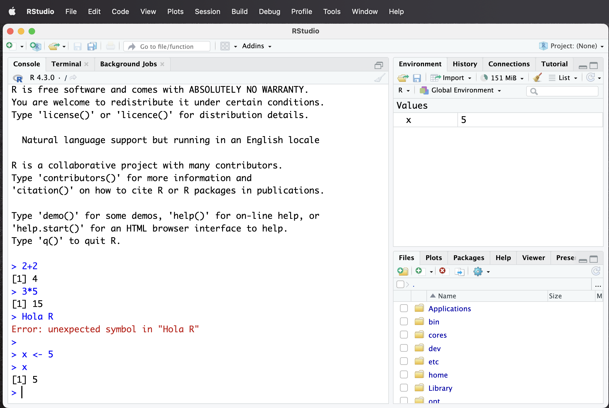
R: crearSe pueden crear nuevos scripts desde el menú de RStudio o utilizando el atajo de teclado Ctrl + Shift + N en Windows o Cmd + Shift + N en Mac.
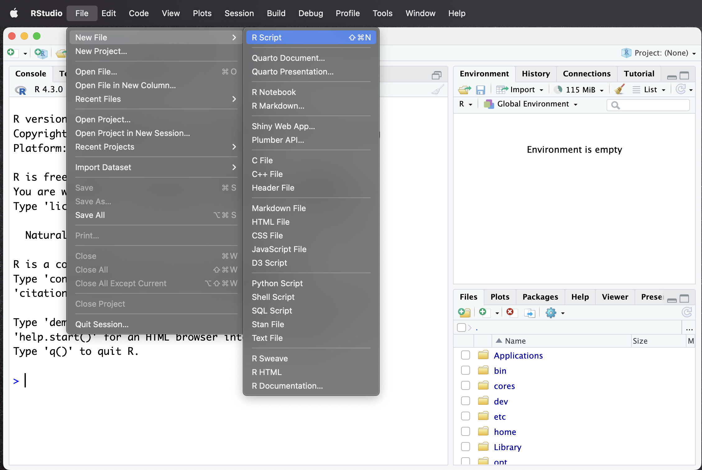
R: navegarLos scripts son archivos de texto que contienen código R.
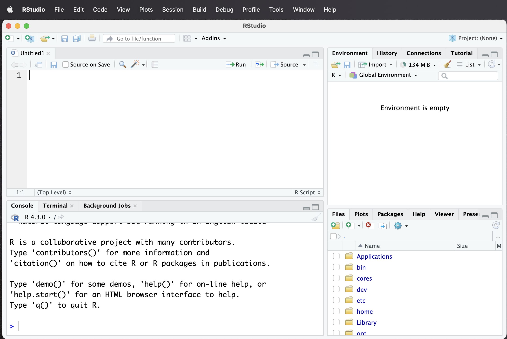
R: escribir códigoLos scripts permiten escribir y guardar código R para su posterior ejecución. Se pueden utilizar comentarios (con #) para documentar el código.
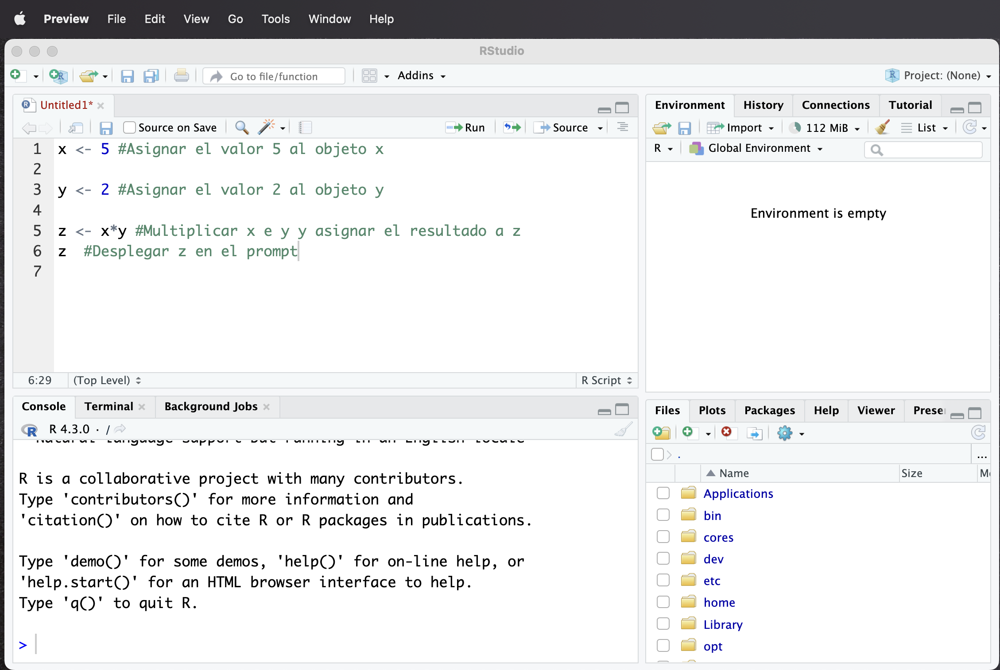
R: ejecutarPara ejecutar un script, se puede utilizar el botón de “Run” en la parte superior del editor de código o utilizar el atajo de teclado Ctrl + Enter en Windows o Cmd + Enter en Mac. Esto ejecutará la línea actual o las líneas seleccionadas.
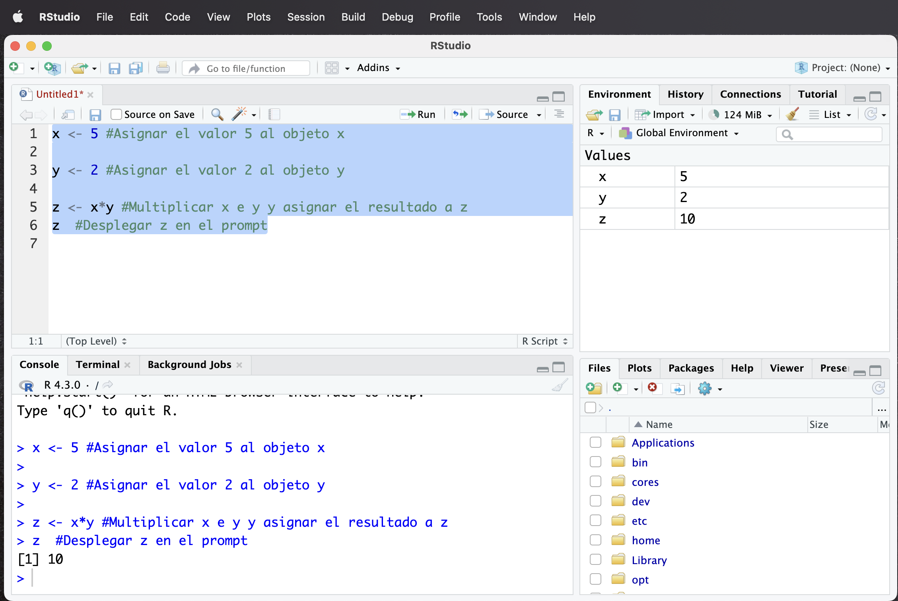
R: guardarEs importante guardar los scripts para no perder el trabajo realizado. Se puede hacer clic en el icono de guardar o utilizar el atajo de teclado Ctrl + S en Windows o Cmd + S en Mac. También se puede elegir la ubicación y el nombre del archivo.
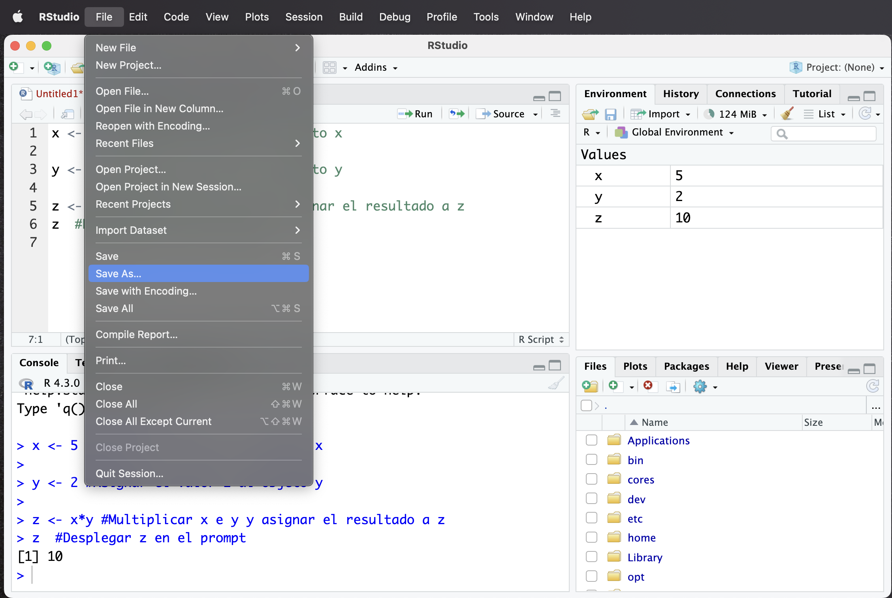
R es una herramienta potente para análisis reproducibles. Es popular en la comunidad científica y de datos.RStudio permite trabajar de manera más eficiente con R, facilitando la escritura, ejecución y organización del código.Próximos pasos
En la siguiente clase abordaremos operaciones con vectores y funciones básicas.